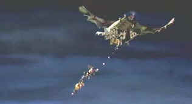

| Chicken
Run/B+,A |
| DVD
Review |
The clucker of the year, a windfall of box office eggs, and the biggest
animation omelet ever produced: Chicken Run is an endless string of happy chicken jokes. For
fans of action movies of yore, especially The Great Escape, there are more nuggets of feed
to gobble down.
 |
| Chicken Run soars! ©Dreamworks |
Deep in the heartland of Britain on the Tweedy farm, a egg producing
compound of chickens does their best to produce a steady quota of yokes. It's a life of production
or perish. The nasty Tweedy dogs guard the chicken fences at night and Mr. Tweedy watches out for
errant chicken runners. But profits are down at the Tweedy's and greedy Mrs. Tweedy is inspired to
find a new way to make chicken lay gold. Ginger is the free-spirited chicken constantly
looking for a way out of the compound. Babs is the chick having trouble making the egg quota. Add
to that the air borne arrival of Rocky, an American rooster with the gift of gab, and things are
shaken and stirred at Tweedy's farm.
Chicken Run delivers everything that it
promises. It's lots of fun. It's almost more a rip-off of The Great Escape than homage, but
I can let that go easily given the treatment. While the characters are entertaining, they are not
engaging. The romance between Rocky and Ginger is plastic, if I may use the word in relation to the
Aardman animation. Still, the production is so well done that despite characters that don't go the
extra mile, Chicken Run has enough flying feathers to tickle your fancy.
Voicing of the Aardman creations gives vitality to the characters. Mel
Gibson is the American rooster Rocky, ready to flap his wings for freedom. Ginger is voiced with
wry and sensible style by Julia Sawalha and the complacent Babs gets a measure of panic from Jane
Horrocks. Miranda Richardson injects a frightful hatchet edge to her voice as Mrs.Tweedy.
The DVD is fabulous. Wonderful depth of color and shading. Chicken Run
is such a dark animation that compared to the upbeat images of Toy Story and friends, it
lacks some eye-popping appeal. Lots of extras to chew on if you are the kind who sucks the last bit
of flesh from a chicken bone. While I was entranced while watching both Toy Stories, I was
merely satisfied watching Chicken Run. Still, my recommendation is unequivocal. And, I won't
hesitate revisiting this charming dish of chicken soufflé again and again.
The special edition is something more than a mere chick pot pie. Along with a
sharp audio commentary from Peter Lord and Nick Park, a behind the scenes featurette, a making of,
some "Easter Eggs," and the enticing chicken panic button.
|
|
|
|

Selections from the Feature Archive include articles on
Akira Kurosawa, Frank
Darabont, Blonde Bimbos, Hollywood Street Gangs, or Vietnam: The
Hollywood Pariah, and many more....
Sturges Emerges
Preston Sturges was Hollywood's resident comic genius for more than a decade. His movies are
timeless. Click on his image to read all about it.


The
Movie Poster Archive includes extensive poster images from the films of stars like Susan Hayward,
Kirk Douglas, Katharine Hepburn and many more. Our featured star is Doris Day.
 
DVDPlanet is the DVD
incarnation of legendary laser retailer Ken Crane's. Deep discounts and serious service.

Great site for DVD followers. Lots of
information, some speculation, opinion, and reviews all bundled in a sparkling interface.

Cinemedia is
the largest film and media directory with over 25,000 links.
|